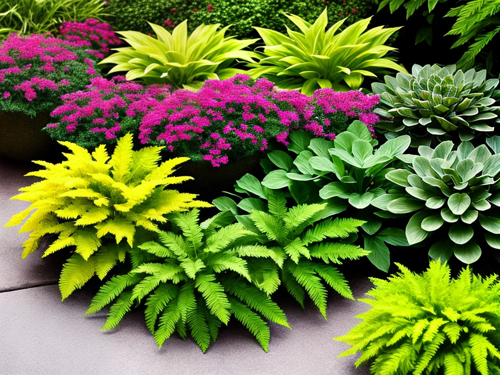
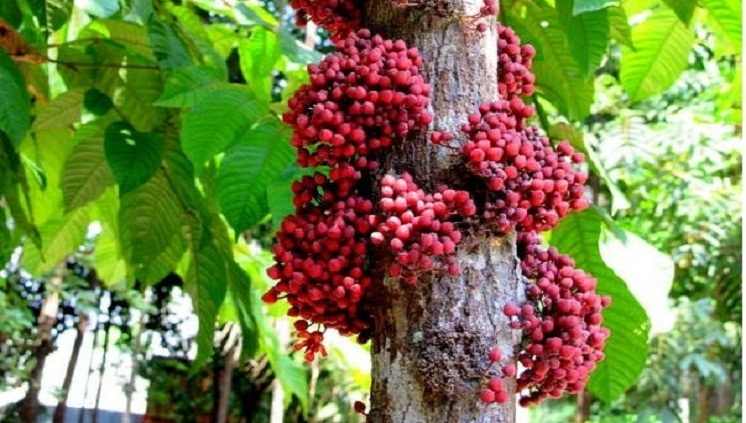
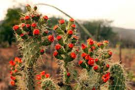
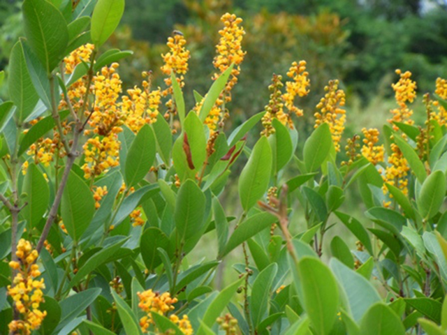
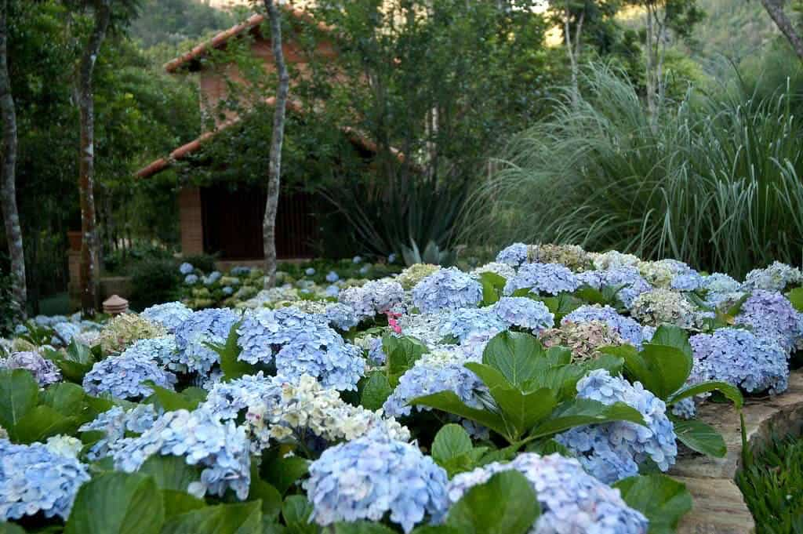

As variedades das plantas são um verdadeiro espetáculo da natureza. Ao longo dos séculos, a diversidade das formas, cores, tamanhos e características das plantas tem fascinado botânicos, biólogos e entusiastas da natureza. Desde as pequenas e delicadas flores que enfeitam os campos até as majestosas árvores que dominam as florestas, as plantas apresentam uma incrível variedade que reflete a sua capacidade de adaptação aos mais diversos ambientes e condições climáticas.
As plantas são seres vivos que desempenham um papel fundamental na manutenção do equilíbrio ecológico do planeta. Elas são os principais produtores de oxigênio através da fotossíntese, processo pelo qual utilizam a energia do sol para converter dióxido de carbono e água em carboidratos e oxigênio. Além disso, as plantas são a base da cadeia alimentar, fornecendo alimento para uma grande variedade de animais, desde insetos até mamíferos.

A diversidade das plantas pode ser observada em cada ecossistema do globo terrestre. Nas regiões tropicais, encontramos uma profusão de espécies de plantas exóticas, como as palmeiras, as bromélias e as orquídeas. Já em ambientes mais frios, as coníferas e as plantas herbáceas predominam, mostrando uma incrível adaptação ao clima mais rigoroso.
Outro aspecto fascinante das variedades das plantas é a sua capacidade de se especializar para sobreviver em condições adversas. Algumas plantas desenvolvem mecanismos para resistir à escassez de água, como as suculentas que armazenam água em suas folhas e caules. Outras espécies desenvolvem adaptações para suportar solos pobres em nutrientes, como as plantas carnívoras que capturam insetos para obter nutrientes adicionais.
As cores e aromas das plantas também contribuem para a sua diversidade. As flores apresentam uma ampla variedade de cores, que atraem polinizadores, como abelhas, borboletas e pássaros. Além disso, muitas plantas produzem óleos essenciais que conferem agradáveis fragrâncias, utilizadas em perfumaria, medicina alternativa e aromaterapia.
A variedade de plantas também é explorada pelo ser humano em diversos campos. Na agricultura, por exemplo, diferentes variedades de culturas são desenvolvidas para otimizar a produção de alimentos e melhorar a resistência a pragas e doenças. Na medicina, muitas plantas possuem propriedades terapêuticas e são utilizadas na fabricação de medicamentos e produtos fitoterápicos.
As plantas também têm papel fundamental na nossa cultura e tradições. Desde tempos remotos, as plantas têm sido utilizadas em rituais religiosos, celebrações festivas e práticas de cura. Além disso, a jardinagem e o cultivo de plantas ornamentais são passatempos populares que proporcionam beleza e bem-estar às pessoas.
A preservação da diversidade das plantas é um desafio importante na atualidade. A perda de habitats naturais, a poluição e as mudanças climáticas são algumas das ameaças que colocam muitas espécies vegetais em risco de extinção. A conservação das plantas é essencial não apenas para a manutenção da biodiversidade, mas também para garantir os serviços ecossistêmicos que elas fornecem, como a produção de oxigênio, a regulação do clima e a proteção dos solos.
Em suma, a variedade das plantas é um tesouro precioso da natureza que merece ser valorizado e protegido. Cada espécie possui suas características únicas e desempenha um papel especial no ecossistema em que vive. Ao aprender sobre as diferentes variedades das plantas, podemos nos maravilhar com a complexidade e a beleza da natureza, além de nos conscientizar sobre a importância de preservar essa riqueza para as gerações futuras.
Regiões do brasil
Região Norte: A região Norte do Brasil é caracterizada por uma grande parte da Floresta Amazônica, considerada a maior floresta tropical do mundo. Nessa região, é possível encontrar uma enorme diversidade de plantas, como árvores de grande porte, palmeiras, cipós, bromélias, entre outras.
Região Nordeste: O Nordeste brasileiro possui uma vegetação variada, que inclui áreas de caatinga, cerrado, restingas e manguezais. Nessa região, encontramos plantas adaptadas a climas mais secos, como cactos e plantas xerófitas, bem como espécies típicas da mata atlântica costeira e de restingas.
Região Centro-Oeste: A região Centro-Oeste abriga o cerrado, um dos principais biomas brasileiros. Nesse ambiente, há uma grande diversidade de plantas, como buritis, ipês, veredas, além de diversas espécies adaptadas ao clima sazonal característico da região.
Região Sudeste: O Sudeste do Brasil abriga a Mata Atlântica, um bioma de extrema importância para a biodiversidade. Nessa região, encontramos uma grande variedade de plantas, desde a Floresta Tropical Pluvial até os campos rupestres e vegetações de altitude na Serra da Mantiqueira e Serra do Mar.
Além dessas regiões principais, é importante mencionar que o Brasil possui ainda outros ecossistemas e biomas, como a Caatinga, o Pantanal e os campos do Pampa, cada um com sua própria riqueza de flora. Em todas essas regiões, a natureza se manifesta em sua exuberância, e a diversidade de plantas é um tesouro a ser valorizado e protegido, garantindo a sustentabilidade e a preservação dos ecossistemas para as futuras gerações.